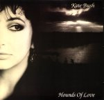

(These lyrics were originally from Andrew Marvick's
The Garden.)
 Hounds Of Love page
Hounds Of Love page
Album/Era
Alphabetical
Gaffaweb
"Hounds of Love"
Hounds of Love
Written by Kate Bush

- "It's in the trees!
- It's coming!"
- When I was a child:
- Running in the night,
- Afraid of what might be
- Hiding in the dark,
- Hiding in the street,
- And of what was following me...
- Now hounds of love are hunting.
- I've always been a coward,
- And I don't know what's good for me.
- Here I go!
- It's coming for me through the trees.
- Help me, someone!
- Help me, please!
- Take my shoes off,
- And throw them in the lake,
- And I'll be
- Two steps on the water.
- I found a fox
- Caught by dogs.
- He let me take him in my hands.
- His little heart,
- It beats so fast,
- And I'm ashamed of running away
- From nothing real--
- I just can't deal with this,
- But I'm still afraid to be there,
- Among your hounds of love,
- And feel your arms surround me.
- I've always been a coward,
- And never know what's good for me.
- Oh, here I go!
- Don't let me go!
- Hold me down!
- It's coming for me through the trees.
- Help me, darling,
- Help me, please!
- Take my shoes off
- And throw them in the lake,
- And I'll be
- Two steps on the water.
- I don't know what's good for me.
- I don't know what's good for me.
- I need your love love love love love, yeah!
- Your love!
- Take your shoes off
- And throw them in the lake!
- Do you know what I really need?
- Do you know what I really need?
- I need love love love love love, yeah!
©1985 Novercia Ltd.
Hounds Of Love page
{kind=link}